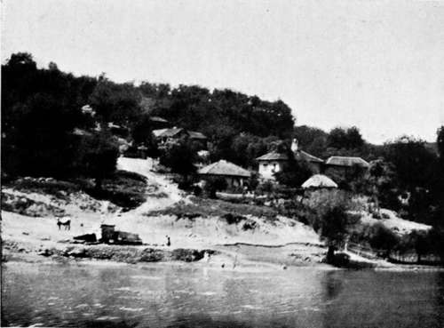
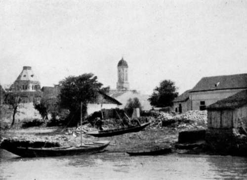

Collecting In The Dobrudscha. Part 13
Description
This section is from the book "Bird-Hunting Through Wild Europe", by R. B. Lodge. Also available from Amazon: Bird-Hunting Through Wild Europe.
Collecting In The Dobrudscha. Part 13
How to procure fuel was the first difficulty ; and while Rettig and I hunted about for a dry spot, Ivan and Zincon went off in the lodkas in search of dry reeds, in which they were fortunately successful, or we should have gone supper-less to bed save for dry bread and olives. Our island was not over and above dry ; water oozed up wherever we sat or lay down ; and in the night I had a dim sort of idea that it was raining hard, but was too sleepy to trouble my head about it. But mingled with the deafening croaks of the frogs was the dreaded hum of countless mosquitoes, and I slept with my head in a green gauze mosquito-veil over my cap. However, this, though it kept out the mosquitoes, must have got disarranged towards morning, for on waking I found inside it, and sitting comfortably in the middle of my forehead, a big frog ! Another croaker I found, on rising, squashed perfectly fiat underneath me. This camp we called in consequence Hotel des Grenouilles.
We frequently saw Sea Eagles sitting among the reeds on the banks or perching on the trees, mostly willow, which grow along the Danube; but the commonest raptorial bird everywhere is undoubtedly the Marsh Harrier, which simply swarms. The Bittern also must be very abundant, judging from the booming, but we never saw one. In our devious wanderings in and out of these endless reeds and sedges it is a wonder we never came on a nest; but though I always kept a sharp look-out, we never found one. Grebes abounded, the Great Crested, Rednecked and Black-necked Grebes appearing more common than the Little Grebe. They are much sought after by the fishermen, who kill them wholesale in spite of the protection nominally accorded them, with very little risk of discovery in these solitudes, where it is possible to travel all day without seeing a human being. One day we passed a Grebe-hunter, who told our men that he had thirty odd Grebe skins on board. The skin of the breast is roughly stripped off and stretched on a reed framework. It is then rubbed with salt and dried in the sun. The restaurant keepers in the towns and fishing-villages are all Jews, who buy up all the Grebe skins and Herons' plumes they can get for the plume trade, and also skins of otter, fox, wolf, and martin. We shot the same day a pair of Red-necked Grebes, the male being spoilt for museum purposes, but I made a fine skin of the female.
Towards evening, as we approached a sparsely-inhabited region, we made for a house we could see afar off in hopes of a night's lodging, but found it almost deserted, and half under water. One solitary being sat in a boat moored to the front of the house, but after an inspection we decided to move on to his nearest neighbour an hour away, leaving him sitting disconsolately half-way up a ladder leading to the roof, as though he contemplated roosting in the Stork's nest there placed. It was, no doubt, the only dry spot in the whole establishment.
We found the other house on the shores of the Black Sea, on a narrow strip of sand which divided the salt water from the fresh. Here we met large flocks of cattle and a lot of men, Bulgars, who were employed by the Government, destroying locusts. But Bulgars are notoriously the most inhospitable people in Europe; and though a heavy thunderstorm was brewing, they never asked us into the house, which was a fairly big one for these parts, and barely condescended to take any notice of us at all. All we could get was permission to sleep on the strip of sand between the cowshed and the water. If we hadn't had a fine carp with us we might have gone supperless to bed, but we had a good supper, and in return for their churlish behaviour we pulled down a part of their dilapidated cowshed with which to make our fire. As soon as it was dark, Rettig and I climbed up on the roof in order to loot the Storks' eggs, for there were several nests. Unfortunately, they all held young birds, which were no good to us. If they had only been eatable we would have taken them fast enough. There would, I expect, have been a fine shindy if we had been seen up there, as the Storks are much venerated here, and it is difficult to get eggs for that reason.
Servian Village On Danube
Bulgarian Village
On the lake of Raselm, which we passed again, we found a large colony of Herring Gulls, which seemed to have yellower legs and feet than our Larus argentatus, a dirty, yellowish white, but not yellow enough for Larus cachinnans, the usual Mediterranean form. There were a lot of well-grown young birds, but I managed to find a few clutches of eggs, though no more than two in a clutch. Rettig near here shot a pair of Great White Herons (Ardea alda), the male of which had beautiful long plumes-over forty, I think, writing from memory. We had seen a few before, and near Galatz they seemed not so uncommon, but we did not turn up any' nests in this country. The female, unfortunately, was spoilt by being too badly shot. We might have saved the skin, perhaps, if we had been quietly at home; but working as one goes, in a small boat, with no room to move and nowhere to put anything, is not conducive to good results in difficult cases. I must say, however, that the rest of our skins turned out very well, and were in fine condition after a little work on them on our return, Rettig being a first-rate taxidermist.
The last day we shot three Mediterranean Black-headed Gulls-lovely birds they were, even more striking than our brown hooded Larus ridibundus, which is also common here. They had jet-black heads, with a scarlet eyelid, and a white patch above and below the eyes, with red beak and feet; we also got a Little Gull, unfortunately damaged too much to skin.
But this expedition, enjoyable enough though it was, was quite unsuccessful in its primary object, the finding of a nesting colony of Pelecanus onocrotalus. And considering that last year's search also failed, I came to the conclusion that they probably nested in some other part of the Dobrudscha higher up the river. In this I was right, for eventually, months after my return, Rettig, on a winter hunting expedition, fell in with an old nesting-ground of these birds, almost by accident, and succeeded in shooting two birds of the same year. He described the bushes for a distance of 1½ kilometres as destroyed by the dung of the thousands of Pelicans and other birds which had nested there- sind hier in solchen unmassen, dass die Weiden-baume, ihre stand und Schlatplatze auf eine. Entfernung von 1½ kilometer infolge der Ablagerung der excremente abgestorben sind.'
Continue to:
- prev: Collecting In The Dobrudscha. Part 12
- Table of Contents
- next: Collecting In The Dobrudscha. Part 14